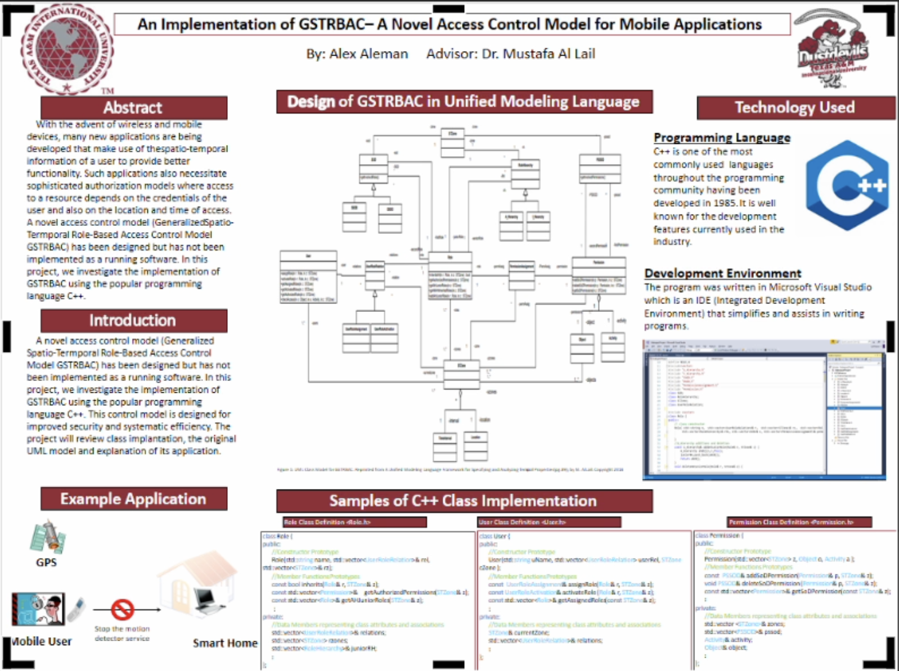

Promotion of Excellence In Undergraduate Research
I involve undergraduate students in my research to prepare the next generation of scholars. My goal is to foster student learning and produce original research results. Undergraduate research helps students gain functional knowledge, critical thinking skills, and problem-solving abilities. I have supervised many undergraduate research projects, which have resulted in success for students, including graduate school enrollment and IT industry positions. My interest in undergraduate research began when I was a Ph.D. student at Colorado State University. My advisor hired an undergraduate researcher assistant to create code implementation of a theoretical approach that he had developed. I witnessed the assistant develop the code and then present his work at a premier conference in software engineering. I was inspired by my advisor's approach to undergraduate research. When I first arrived at TAMIU, I aimed to apply a similar approach and positively impact undergraduate education. In the spring of 2019, I participated in a training hosted by the School of Business at TAMIU called "Developing Employability Skills Through Undergraduate Research." This training was enlightening, and I have since utilized many of the techniques and abilities presented to help my students become more desirable in the IT industry through undergraduate research. Additionally, I attended TAMIU ARC's online workshop on "Optimizing Mentoring Relationships", where I learned valuable skills to mentor my students more effectively.
I have introduced a new approach to mentoring undergraduate researchers, combining my experience in mentoring with the best practices in teaching . By utilizing seven research-based principles for effective teaching, I have successfully motivated and engaged undergraduate students in their research projects, boosting their chances of success. I have supervised a total of 25 research projects involving 48 students. I have also participated in mentoring summer research experience for undergraduates (REU) at Columbus State University, resulting in several poster presentations at conferences. One of these posters even won third place at the 8th national workshop for REU research in networking and systems. Undergraduate research has made a significant impact on the success of students. So far, eight students have enrolled in graduate studies at different institutions, seven students have secured positions in the IT industry (some of which before graduating), and two students joined me to participate in a research internship at a Department of Energy lab this last summer. The remaining are still pursuing their degrees. Based on the success I have had with my mentoring style, I decided to share my experience with other TAMIU faculty. I gave a presentation on how to mentor undergraduate researchers to TAMIU faculty during the 13th annual learning technologies week. I have been invited to give the same training again the past Spring through the TAMIU ARC project. Furthermore, my supervisor, Dr. Mahmoud T. Khasawneh, has recommended my name to deliver training to the Texas A&M System Louis Stokes Alliance for Minority Participation (TAMUS LSAMP) undergraduate students to boost their skillsets to do research.
Press Releases and Public Recognition of Student Research
To enhance the visibility of student research accomplishments, I have actively participated in sharing research findings through press releases. Promoting student research achievements serves several important purposes. By disseminating their work through press releases and public presentations, I aim to showcase the exceptional talents of our undergraduate researchers to a broader audience, inspiring other students to engage in research and pursue their academic goals. Furthermore, these efforts contribute to a vibrant research culture within our department and enhance TAMIU's reputation as a leading institution for undergraduate research.
Below are two press releases links highlighting my students' work.
- TAMIU Students Win Top Awards at the 2024 LSAMP Symposium
- TAMIU Students Participate in Statewide Virtual Undergraduate Research Day
Texas Undergraduate Research day 2021 Poster Presentation.
- Project Title: Comparative Analysis of Machine Learning Models for Internet Things Botnet Identification
- Undergraduate student: Sarah-Ramos-Luna
- Abstract: The rapid growth of Internet of Things (IoT) devices in homes has created new opportunities for cyberattacks, particularly the formation of large-scale botnets. This research explores the application of machine learning for effective IoT botnet detection, aiming to develop a predictive model capable of identifying and reducing malicious intrusions. We evaluated many machine learning frameworks, combining four algorithms (including Random Forest and XGBoost), two data scaling techniques, and two feature selection methods, with correlation-based selection proving to be more efficient. Model performance was assessed using accuracy, precision, recall, and F1-score to account for misclassification risks. Our findings indicate that models employing Random Forest or XGBoost offer the most promising results for IoT botnet detection. Future work will focus on comparative analysis of these models, deep learning techniques for feature extraction, and real-world deployment in IoT environments to enhance cybersecurity solutions
- Project Title: AI-Driven Human-Robot Collaboration for Enhanced Warehouse Operations.
- Undergraduate students: Mariana Garcia and Adriana Trevino
- Abstract: Warehouse operations involve physically demanding tasks that often lead to significant worker fatigue, injuries, and safety hazards, negatively impacting productivity. The warehousing and transportation sectors experience alarmingly high and rapidly increasing injury rates, resulting in considerable economic losses due to worker absenteeism, totaling approximately $58.6 billion. To address the shortcomings of current safety protocols, this research investigates the integration of collaborative robots (referred to as "cobots") as a potential solution to reduce common hazardous tasks, such as overexertion, slips, falls, and equipment-related incidents. This study outlines the development of a cobot that utilizes machine learning models, audio processing, and simulation-based evaluation. Using open-source tools and the HR130 video dataset of warehouse tasks, the cobot was trained for action recognition with MediaPipe Pose and TensorFlow I3D. Emotion recognition was facilitated through the use of DeepFace, while a Long Short-Term Memory Network (LSTM) was employed for proactive worker action prediction. Intuitive human-robot interaction is achieved via voice command processing utilizing the Whisper audio recognition model. The cobot's functionality was validated in a virtual warehouse environment created with PyBullet, allowing for real-time testing of the action and emotion recognition models. Preliminary results indicate an emotion recognition accuracy of 66% and an action recognition prediction accuracy of 53%, which were assessed using standard metrics such as accuracy, precision, recall, and F1 score. Future work will concentrate on improving performance by integrating advanced audio recognition capabilities, refining testing methodologies, and employing sophisticated simulation environments like Gazebo to enhance model responsiveness and overall accuracy.
Luis Alvalez Almanza, Dr. Al Lail’s undergraduate research assistant, presenting at the 33rd IEEE International Conference on Computer Communications and Networks (ICCCN 2024) July 29 - 31, 2024, Big Island, Hawaii, USA
TAMIU students achieved outstanding success at the 2024 Texas A&M University System Louis Stokes Alliance for Minority Participation Symposium. Dr. Al Lail's students received both the first and second place awards.
Erick Cervantes, Dr. Al Lail’s undergraduate research student, presenting his poster at a national conference.
Francisco Salazar, Dinela Pinto, and Luis Alvarez Almanza, Dr. Al Lail’s undergraduate researchers, presented their posters at the LSAMP conference. They won first place at that conference.
Dr. Al Lail and his undergraduate research students attended TAMU PATHWAY 2022 conference in College Station.

Students Presenting Undergradute Research Poster.
Students Presenting Undergradute Research Poster.
Students Presenting Undergradute Research Poster.
Students Presenting Undergradute Research Poster.
Students Presenting Undergradute Research Poster.
Undergraduate Research Mentoring Certificates
I take pride in my strong record of mentoring undergraduate research. Over the years, I have mentored numerous students through various programs, including the ARC Research Bootcamp for four consecutive years, the Honors Program, and the ACT-on-IDEA program.
My mentorship experience extends beyond Texas A&M International University (TAMIU). I have also worked with undergraduate researchers at Columbus State University (CSU) as part of the NSF Research Experiences for Undergraduates (REU) program. A notable project I mentored at CSU, done in collaboration with Dr. Alfredo Perez, earned significant recognition by winning third place at the IEEE 8th National Workshop on RU Research in Networking.
These experiences have allowed me to guide student research, foster their intellectual growth, and develop their research skills. I am committed to providing a supportive and challenging environment for undergraduate researchers, believing that these experiences are invaluable for their professional development.


Current Undergraduate Research Students
- Aguilar, Alejandro
- Contributed to the development of the TAMIU AIRES incubatorship project ParkU: A Live Parking Lot Map using Computer Vision
- Contributing to the development of the TAMIU AIRES incubatorship project CrossView: An AI-enhanced Border Traffic Analysis System
- Garcia, Mariana
- Completed Summer TAMIU ARC Applied Research Bootcamp
- Developing a high-quality faculty and project websites
- Working on an AI research project
- Maroongroge, Paul
- Working on an AI research project
- Trevino, Adriana
- Working on an AI research project
- Ramos Luna, Sarah
- Working on an AI research project
- Vela, Luis
- Working on an AI research project
- De Luna, Andy
- Working on an AI research project
- Gonzalez, Karol
- Working on an AI research project.
- Mota, Gael
- Contributing to the development of the TAMIU AIRES incubatorship project CrossView: An AI-enhanced Border Traffic Analysis System
- Fernando Casas Cisneros
- Contributing to the development of the TAMIU AIRES incubatorship project CrossView: An AI-enhanced Border Traffic Analysis System
Graduated Undergraduate Research Students
- Achoy, Miguel
- Contributed to the development of the TAMIU AIRES incubatorship project ParkU: A Live Parking Lot Map using Computer Vision
- Contributed to the development of the TAMIU AIRES incubatorship project CrossView: An AI-enhanced Border Traffic Analysis System
- Participated in France Summer Internship at Internship (École Nationale Supérieure d’Arts et Métiers
- Cervantes, Erick
- One conference presentation at the IISE Annual Conference Expo
- One journal article under review at Engineering Applications of Artificial Intelligence
- Three research internships at the DOE Oak Ridge National Laboratory
- Pinto, Daniela
- One peer-reviewed conference paper at the 33rd International Conference on Computer Communications and Networks (ICCCN 2024)
- One journal article under review at Future Internet
- Won the first place at LSAMP student conference
- Salazar, Francisco
- One peer-reviewed conference paper at the 33rd International Conference on Computer Communications and Networks (ICCCN 2024)
- One journal article under review at Future Internet
- Won the first place at LSAMP student conference
- Alvarez Almanza, Luis
- One peer-reviewed conference paper at the 33rd International Conference on Computer Communications and Networks (ICCCN 2024)
- One journal article under review at Future Internet.
- Won the first place at LSAMP student conference
- Villareal, Alberto
- Contributed to the development of the TAMIU AIRES incubatorship project ParkU: A Live Parking Lot Map using Computer Vision
- Contributed to the development of the TAMIU AIRES incubatorship project An AI-enhanced Border Traffic Analysis System
- Alasgarli, Javid
- One poster presentation at the PATHWAY conference
- Benavides, Cristina
- One poster presentation at the PATHWAY conference
- Botello, Omar
- One poster presentation at the PATHWAY conference
- Cardenas, Hector
- Three peer-reviewed conference papers
- One poster presentation at the PATHWAY conference
- Graduate student at TAMU college station
- Delgado, Carlos
- One poster presentation at the Texas Undergraduate Research day
- Elliott, Villen
- One poster presentation at the PATHWAY conference
- Flores, Jacob
- One poster presentation at the PATHWAY conference
- Participated in France Summer Internship at Internship at École Nationale Supérieure d’Arts et Métiers
- One poster presentation at PATHWAY conference
- Two research internships at the DOE Oak Ridge National Laboratory
- Works for the DOE Los Alamos National Laboratory
- Garcia, Alejandro
- One peer-reviewed conference paper
- One journal article in Future Internet
- One poster presentation at the PATHWAY conference
- Garza, Sofia
- One poster presentation at the PATHWAY conference
- Gonzalez, Carlos
- One poster presentation at the PATHWAY conference
- Gonzalez, Jhonny
- Won the second place at LSAMP student conference
- Three research internships at the DOE Oak Ridge National Laboratory
- Graduate student at University of Texas at El Paso
- Gonzalez, Jose
- Won the second place at LSAMP student conference
- Three research internships at the DOE Oak Ridge National Laboratory
- Graduate student at University of Texas at El Paso
- Haunschmid, David
- One poster presentation at the PATHWAY conference
- Haunte, Alexis
- Two peer-reviewed conference papers
- One journal article under review submitted to the Journal of Computer Networks
- One journal article under preparation
- Participated in France Summer Internship at Internship at École Nationale Supérieure d’Arts et Métiers
- One poster presentation at PATHWAY conference
- Two research internships at the DOE Oak Ridge National Laboratory
- Graduate student at UTSA
- Juarez, Mario
- One poster presentation at the PATHWAY conference
- Contributed to the development of the TAMIU AIRES incubatorship project Heart Rate Classification Using Machine Learning.
- Moreno, Luis
- One poster presentation at the PATHWAY conference
- Contributed to the development of the TAMIU AIRES incubatorship project Heart Rate Classification Using Machine Learning
- Moncivais, Marshal
- Four peer-reviewed conference paper
- One journal article in Electronics
- One journal article in the Journal of Computing Sciences in Colleges
- Two poster presentation at the PATHWAY conference
- Graduated with a master degree from UTSA
- Olivo, Saul
- One peer-reviewed conference paper
- One journal article in Future Internet
- One poster presentation at the PATHWAY conference
- Pachicano, Jesus
- One poster presentation at the PATHWAY conference
- Rangel, Steven
- One poster presentation at the PATHWAY conference
- Rivas, Felipe
- One poster presentation at the PATHWAY conference
- Contributed to the development of the TAMIU AIRES incubatorship project Heart Rate Classification Using Machine Learning.
- Rosales, Antonio
- Five peer-reviewed conference papers
- One journal article
- One poster presentation at the PATHWAY conference
- Graduate student at TAMU
- Salinas, Daniel
- One poster presentation at the PATHWAY conference
- Santillana, Lorena
- One poster presentation at the PATHWAY conference
- Torres, Edwin
- One journal article submitted.
- One peer-reviewed conference paper
- Doing a master degree at Arizona State University
- Torres, Gabriel
- Contributed to the development of the TAMIU AIRES incubatorship project ParkU: A Live Parking Lot Map using Computer Vision
- Graduate student at TAMIU
- Trevino, Miguelangel
- One journal article in the Journal of Computing Sciences in Colleges
- One journal article in American Journal of Advanced Research
- Vega, Jaqueline
- One poster presentation at the PATHWAY conference
- Vielma, Reynaldo
- One poster presentation at the PATHWAY conference
- Zimmerman, Paden
- Worked on a machine-learning approach for electric vehicles routing problem
Sample Student Conference Oral Presentations
I am deeply committed to providing students with authentic research experiences that extend beyond the classroom. A cornerstone of my mentoring philosophy is actively engaging students in all stages of the research process, from conceptualization and data collection to analysis, writing, and dissemination. I believe that co-authoring research papers and presenting at conferences offer invaluable opportunities for students to develop critical thinking, communication, and professional skills, all while making meaningful contributions to their fields.
I have had the privilege of mentoring numerous students who have gone on to co-author peer-reviewed publications and present their work at local and national conferences. My approach involves a collaborative process where students are integrated into the research team as active participants. I provide guidance and support throughout the writing process, helping students refine their ideas, develop strong arguments, and craft clear and concise manuscripts. Similarly, I work closely with students to prepare for conference presentations, assisting them with everything from designing effective slides to practicing their delivery and answering questions from the audience.
I believe these experiences are transformative, empowering students to gain valuable research skills and build confidence in their abilities as scholars and professionals. Witnessing my students succeed in these arenas is incredibly rewarding and reinforces my commitment to fostering the next generation of researchers and scholars. Additionally, these experiences contribute to the university's research mission and enhance the visibility of our programs.
Below, you can view samples of many of the oral and poster presentations created by my students under my supervision and presented at various venues.
- Paper Title: Comparing Llama-2 and GPT-3 LLMs for HPC kernels generation
- Presented and Published at: Proceedings of the 36th International Workshop on Languages and Compilers for Parallel Computing (LCPC2023)
- Undergraduate students: Alexis Huante
- Abstract: We evaluate the use of the open-source Llama-2 model for generating well-known, high-performance computing kernels (e.g., AXPY, GEMV, GEMM) on different parallel programming models and languages (e.g., C++: OpenMP, OpenMP Offload, OpenACC, CUDA, HIP; Fortran: OpenMP, OpenMP Offload, OpenACC; Python: numpy, Numba, pyCUDA, cuPy; and Julia: Threads, this http URL, this http URL). We built upon our previous work that is based on the OpenAI Codex, which is a descendant of GPT-3, to generate similar kernels with simple prompts via GitHub Copilot. Our goal is to compare the accuracy of Llama-2 and our original GPT-3 baseline by using a similar metric. Llama-2 has a simplified model that shows competitive or even superior accuracy. We also report on the differences between these foundational large language models as generative AI continues to redefine human-computer interactions. Overall, Copilot generates codes that are more reliable but less optimized, whereas codes generated by Llama-2 are less reliable but more optimized when correct.
- Paper Title: Machine Learning for Network Intrusion Detection– A Comparative Study
- Presented and Published at: Lean Six Sigma & Data Science Conference 2022.
- Being considered for publication at: The Institute of Industrial and Systems Engineers, IISE Transactions.
- Undergraduate students: Alejandro Garcia and Saul Olivo
- Abstract: With the advent of the internet and electronic technologies, modern society has evolved quickly to utilize communication and data-sharing mediums. However, such technologies have created new ways for attackers to gain access to confidential electronic resources. Consequently, data breaches have significantly impacted our society in multiple ways. Researchers have developed multiple security countermeasure techniques known as Network Intrusion Detection Systems (NIDS). Despite those techniques, attackers have innovated new ways to gain unauthorized access to resources. In this work, we propose using Machine Learning (ML) to develop a NIDS system capable of detecting modern attack types with a very high detection rate. Towards this end, we implemented and evaluated several ML algorithms and compared their effectiveness using a state-of-the-art dataset containing modern attack types. The results show that the Random Forest model outperformed other models with a detection rate of modern network attacks of 97 percent. In this study, we showed that not only accurate prediction is possible, but a high detection rate of attacks can also be achieved. These results indicate that ML has the potential to create very effective NIDS systems.
- Paper Title: A Lightweight Analysis Tool for Validating Temporal Properties of UML Class Diagrams
- Presented and Published at: The 45th IEEE/ACM International Conference on Software Engineering, which is the premier software engineering conference. Link to Conference
- Being considered for publication at: The peer-review proceedings of the 45th IEEE/ACM International Conference on Software Engineering.
- Undergraduate students: Antonio Rosales and Hector Cardenas
- Abstract: Model-driven engineering (MDE) has been criticized for its lack of good tooling. Although advances have been made, most MDE analysis tools rely on techniques and notations that complicate the analysis process. These tools also do not align well with the MDE methods and practitioners. In particular, to analyze temporal properties of systems designed using UML, many approaches opt to use heavyweight mathematical formalisms to specify properties while transforming the UML models to model- checking technologies for verification. This approach introduces accidental complexities. Therefore, we created Temporal Property Validator (TPV), a tool that allows designers to specify and analyze temporal properties using UML notations, techniques, and tools. The goal is to create a tool that eliminates the complexities and amplifies the skills of UML designers in developing reliable software. Tool download: (https://github.com/mustafalail/TPV-Tool)
- Paper Title: Towards a Software System for Spatio-Temporal Authorization.
- Presented and Published at:The Consortium for Computing Sciences in Colleges (CCSC), 2021
- Being considered for publication at: Journal of Computing Sciences in Colleges 36, no. 7 (2021): 47-55.
- Undergraduate students:Marshal Moncivais and Miguel angel Trevino
- Abstract:With the advent of the internet and electronic technologies, modern society has evolved quickly to utilize communication and data-sharing mediums. However, such technologies have created new ways for attackers to gain access to confidential electronic resources. Consequently, data breaches have significantly impacted our society in multiple ways. Researchers have developed multiple security countermeasure techniques known as Network Intrusion Detection Systems (NIDS). Despite those techniques, attackers have innovated new ways to gain unauthorized access to resources. In this work, we propose using Machine Learning (ML) to develop a NIDS system capable of detecting modern attack types with a very high detection rate. Towards this end, we implemented and evaluated several ML algorithms and compared their effectiveness using a state-of-the-art dataset containing modern attack types. The results show that the Random Forest model outperformed other models with a detection rate of modern network attacks of 97 percent. In this study, we showed that not only accurate prediction is possible, but a high detection rate of attacks can also be achieved. These results indicate that ML has the potential to create very effective NIDS systems.
- Paper Title:Machine Learning for Network Intrusion Detection– A Comparative Study
- Presented and Published at: The ACM Symposium on Access Control Models and Technologies (SACMAT 2023)
- Undergraduate students: Marshal Moncivais
- Abstract: An increase in the use of IoT systems has created a demand for greater security for these systems. To address this, we have developed a generic IoT architecture that adds additional controls based on a user’s time and location of access. By controlling when and where users access resources, these systems can better control how information is obtained and shared. A simple implementation based on this architecture has been created to demonstrate the functionality of this system, showing how information is shared between various components within the system and how access is granted or denied to modify devices within the system.
- Paper Title: Intrinsic Dimensionality (ID) for Machine Learning- A Comparative Study
- Presented and Published at: The ACM Symposium on Access Control Models and Technologies (SACMAT 2023)
- Undergraduate students: Alejandro Garcia and Saul Olivo
- Abstract:IoT devices help connect devices constantly by sharing data and creating an intelligent network, which allows devices to be more productive. Such a network can be beneficial most of the time, but how secure are they? IoT devices aren't as safe as we may think. The manufacturer decided to pursue a better performance over security, which could compromise our data. In this research, we determine if implementing a machine learning algorithm is worth it by using the ID (intrinsic dimensionality) values of eight data sets that help determine its complexity by using both euclidean and hamming distances along which six machine learning algorithms. The Evaluation of the model will help determine if the complexity of datasets truly represents the benefits of implementing machine learning algorithms.
- Paper Title: Performance Evaluation of Supervised Machine Learning Algorithms to Predict Shale Oil Production
- Presented and Published at: IISE Annual Conference and Expo
- Undergraduate students: Erick Cervantes and Edwin Torres
- Abstract:Predicting oil production for different shale oil reservoirs is a non-trivial problem that highly influences the field appraisal and production planning in the Petroleum Engineering (PE) industry. Different reservoir characteristics are used to indicate production rate profiles including oil rate, gas rate, and average reservoir pressure. The recent trend in predicting oil production rates is based on Machine Learning (ML) algorithms. Even though ML algorithms have been applied to a variety of oil production datasets, there is a need to evaluate the capabilities of different ML algorithms to solve PEs’ non-linear, high-dimensional prediction problems. This paper presents a performance evaluation of four ML models: Extreme Gradient Boosting (XGB), Random Forest (RF), Neural Network (NN), and Support Vector Machine (SVM). The evaluation results indicate that NN and XGB perform better than either SVM or RF. Specifically, the NN model had an error rate of 3.32%, which outperformed other models in predicting the oil and gas rates. The XGB model outperformed others in predicting average reservoir pressure with an error rate of 3.83%. To obtain the best performance of all outputs, we combined the NN and the XGB models, reducing the error rate to 2.84% which is lower than either individual component.
Sample Student Conference Poster Presentations
TAMIU Students Presenting Conference Project Poster
- Project Title: Formal UML-based Modeling and Analysis for Securing Location-based IoT Applications.
- Presented at and won 3rd Place at: 2022 IEEE 19th International Conference on Mobile Ad Hoc and Smart Systems (MASS)
- Undergraduate students: Hector Cardenas, Ryan Zimmerman, Antonio Rosales Viesca
- Abstract: We present a process and a tool to apply formal methods in Internet of Things (IoT) applications using the Unified Modeling Language (UML). As there are no best practices to develop secured IoT systems, we have developed a plug-in tool that integrates a framework to validate UML software models and we present the design of a location-based IoT application as a use case for the validation tool.
- Project Title: Implementation of GSTRBAC - A Novel Access Control Model for Mobile Applications
- Presented at: Texas Undergraduate Research Day, April 2021
- Undergraduate students: Marshal Moncivais, Miguelangel Trevino, and Carlos Delgado
- Abstract: The increasing dependency on digital technology has made the concept of data security an important concern. Not only how information is accessed, but also where and when have become important considerations in cyber-security. Certain situations exist where it is necessary to restrict access based on time and location. An example is a policy for a medical institution where doctors can only access patient records at hospitals during their shifts. The Generalized Spatio-Temporal Role-Based Access Control model (GSTRBAC) determines users’ access to resources based on such information. This paper describes a software architecture and its current implementation of the GSTRBAC model.
- Project Title: A Software Design for Mobile Applications with Spatio-Temporal Authorization
- Presented at: TAMU 2019 PATHWAY Student Conference, Laredo, Texas
- Undergraduate students: Omar Botello, Reynaldo Vielma, Marshal Moncivais, Jaqueline Vega, and Miguelangel Trevino
- Abstract:
- Project Title: Implementation of GSTRBAC - A Novel Access Control Model for Mobile Applications
- Presented at: TAMU 2022 PATHWAY Student Conference, College Station, Texas
- Undergraduate students: Hector Cardenas and Antonio Rosales
- Project Title: Efficient Prediction of Shale Oil Production Rates Using Machine Learning Applications
- Presented at: TAMU 2022 PATHWAY Student Conference, College Station, Texas
- Undergraduate students: Eric Cervantes and Edwin Torres
- Project Title: Secure Cloud-based Software System Incorporating Time and Location Into Access Control Decisions
- Presented at: TAMU 2022 PATHWAY Student Conference, College Station, Texas
- Undergraduate student: Marshal Moncivais, Carlos Delgado, and Robert Benton
- Project Title: Machine Learning Technique for Intrusion Detection in Cloud Computer and Internet of Things
- Presented at: TAMU 2022 PATHWAY Student Conference, College Station, Texas
- Undergraduate students: Mario Juarez and Carlos Gonzalez
- Project Title: Detecting Network Intrusions Using Supervised Machine Learning Techniques and Feature Selection
- Presented at: TAMU 2022 PATHWAY Student Conference, College Station, Texas
- Undergraduate students: Jesus Pachicano, David Haunschmied, Cristina Benavides, and Lorena Santillana
- Project Title: Machine Learning Approach to Intrusion Detection
- Presented at: TAMU 2022 PATHWAY Student Conference, College Station, Texas
- Undergraduate students: Alejandro Garcia and Saul Olivo
- Project Title: Machine Learning Approach to Intrusion Detection
- Presented at: TAMU 2022 PATHWAY Student Conference, College Station, Texas
- Undergraduate students: Sofia Garza and Steven Rangel
- Project Title: Machine Learning Approach to Intrusion Detection
- Presented at: TAMIU LBV Conference, April 2019
- Undergraduate student: Alex Aleman 
- Project Title: Comparative Analysis of Machine Learning Models for Internet Things Botnet Identification
- Undergraduate student: Sarah-Ramos-Luna
- Abstract: The rapid growth of Internet of Things (IoT) devices in homes has created new opportunities for cyberattacks, particularly the formation of large-scale botnets. This research explores the application of machine learning for effective IoT botnet detection, aiming to develop a predictive model capable of identifying and reducing malicious intrusions. We evaluated many machine learning frameworks, combining four algorithms (including Random Forest and XGBoost), two data scaling techniques, and two feature selection methods, with correlation-based selection proving to be more efficient. Model performance was assessed using accuracy, precision, recall, and F1-score to account for misclassification risks. Our findings indicate that models employing Random Forest or XGBoost offer the most promising results for IoT botnet detection. Future work will focus on comparative analysis of these models, deep learning techniques for feature extraction, and real-world deployment in IoT environments to enhance cybersecurity solutions
- Project Title: AI-Driven Human-Robot Collaboration for Enhanced Warehouse Operations.
- Undergraduate students: Mariana Garcia and Adriana Trevino
- Abstract: Warehouse operations involve physically demanding tasks that often lead to significant worker fatigue, injuries, and safety hazards, negatively impacting productivity. The warehousing and transportation sectors experience alarmingly high and rapidly increasing injury rates, resulting in considerable economic losses due to worker absenteeism, totaling approximately $58.6 billion. To address the shortcomings of current safety protocols, this research investigates the integration of collaborative robots (referred to as "cobots") as a potential solution to reduce common hazardous tasks, such as overexertion, slips, falls, and equipment-related incidents. This study outlines the development of a cobot that utilizes machine learning models, audio processing, and simulation-based evaluation. Using open-source tools and the HR130 video dataset of warehouse tasks, the cobot was trained for action recognition with MediaPipe Pose and TensorFlow I3D. Emotion recognition was facilitated through the use of DeepFace, while a Long Short-Term Memory Network (LSTM) was employed for proactive worker action prediction. Intuitive human-robot interaction is achieved via voice command processing utilizing the Whisper audio recognition model. The cobot's functionality was validated in a virtual warehouse environment created with PyBullet, allowing for real-time testing of the action and emotion recognition models. Preliminary results indicate an emotion recognition accuracy of 66% and an action recognition prediction accuracy of 53%, which were assessed using standard metrics such as accuracy, precision, recall, and F1 score. Future work will concentrate on improving performance by integrating advanced audio recognition capabilities, refining testing methodologies, and employing sophisticated simulation environments like Gazebo to enhance model responsiveness and overall accuracy.